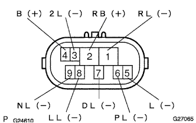
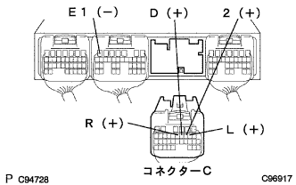

Electronic control type automatotlanthransxle [ECT] system (U441E) Neutral Start Switch ASSY system |
| Step 1 | Tascan data reading (shift position SW) |
Use Tascan to operate according to the screen display, display the [ECU data monitor] screen and check the computer data.
| Item name [symbol] | Item explanation | Inspection condition | Reference value | Inspection items in the event of an abnormality |
|---|---|---|---|---|
| Shift position SW L range [L] | Express the L range | Shift lever N → L | OFF → ON | Neutral start switch (L) Signal |
| Shift position SW 2 range [2] | 2 Express the range | Shift lever N → 2 | OFF → ON | Neutral start switch (2) Signal |
| Shift position SW R range [R] | Express the R range | Shift lever N → R | OFF → ON | Neutral start switch (R) signal |
| Shift position SW D -range [D] | Represent D range | Shift lever N → D | OFF → ON | Neutral start switch (D) Signal |
|
| ||||
| NG | |
| Step 2 | Wire harness and connector inspection (power supply system) |
Cut off the leu martial start Suitsui connector.
 |
Use the Toyota Electrical Tester to check the voltage between the wire harness side connector 2 (RB) terminal ← → body ground ground using a Toyota Electrical Tester.
|
| ||||
| OK | |
| Step 3 | Neutral Start Switch Asset Single Inspection |
Cut off the leu martial start Suitsui connector.
|  |
Inspect the conjunction between each terminal using a Toyota Electrical Tester.
| Shift position | Terminal number (terminal symbol) | Conduction |
|---|---|---|
| P range | 6 (PL) ← → 2 (RB) | There is an conductor |
| ↑ | 5 (L) ← → 4 (B) | There is an conductor |
| R range | 1 (RL) ← → 2 (RB) | There is an conductor |
| N range | 9 (RB) ← → 2 (NL) | There is an conductor |
| ↑ | 5 (L) ← → 4 (B) | There is an conductor |
| D -range | 7 (DL) ← → 2 (RB) | There is an conductor |
| 2 range | 3 (2L) ← → 2 (RB) | There is an conductor |
| L range | 8 (LL) ← → 2 (RB) | There is an conductor |
|
| ||||
| OK | |
| Step 4 | Wire harness and connector inspection (nyutoral Start Suitsu ASSY-engine control compilation) |
Connect a connector of the nyutoral start Suitsui.
Cut the connector C of the engine controlled compilation.
|  |
Turn on the icunitsu -si -si -si -wisit and use a Toyota Electrical Tester to inspect the voltage between each terminal.
(The terminal array isreference)
| Shift position | Terminal number (terminal symbol) | Voltage [V] |
|---|---|---|
| R range | C11 (R) ← → B7 (E1) | 7.5-14 |
| D -range | C10 (D) ← → B7 (E1) | 7.5-14 |
| 2 range | C9 (2) ← → B7 (E1) | 7.5-14 |
| L range | C8 (L) ← → B7 (E1) | 7.5-14 |
|
| ||||
| OK | ||
| ||